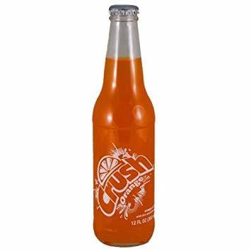
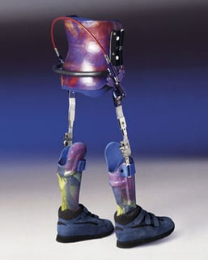

写在前面
本文是对R.E.M乐队著名的反战歌曲Orange Crush的分析，如果你还没有听过，我建议你从这里听一听，或者在这里欣赏一个优秀的live版本（可以看到主唱性感的光头），当然，边听边看本文也未尝不可。
前置知识：越战相关历史。
完整歌词
(Follow me, don’t follow me)
I’ve got my spine, I’ve got my orange crush
(Collar me, don’t collar me)
I’ve got my spine, I’ve got my orange crush
(We are agents of the free)
I’ve had my fun and now it’s time to serve your conscience overseas
(Over me, not over me)
Coming in fast, over me (oh, oh)
I’ve got my spine, I’ve got my orange crush
(Collar me, don’t collar me)
I’ve got my spine, I’ve got my orange crush
(We are agents of the free)
I’ve had my fun and now it’s time to serve your conscience overseas
(Over me, not over me)
Coming in fast, over me (oh, oh)
High on the roof, thin the blood
Another one came on the waves tonight
Comin’ in, you’re home
We would circle and we’d circle and we’d circle to stop and consider and centered on the pavement stacked up all the trucks jacked up and our wheels in slush and orange crush in pocket and all this here county, hell, any county, it’s just like heaven here, and I was remembering and I was just in a different county and all then this whirlybird that I headed for I had my goggles pulled off; I knew it all, I knew every back road and every truck stop
(Follow me, don’t follow me)
I’ve got my spine, I’ve got my orange crush
(Collar me, don’t collar me)
I’ve got my spine, I’ve got my orange crush
(We are agents of the free)
I’ve had my fun and now it’s time to serve your conscience overseas
(Over me, not over me)
Coming in fast, over me (oh, oh)
High on the roof, thin the blood
Another one climbs on the waves tonight
Comin’ in, you’re home
High on the roof, thin the blood
Another one climbs on the waves tonight
Comin’ in, you’re home
注：（）内的是贝斯手的伴唱，中间长长一坨意义不明的话是主场拿扩音器喊话的部分
对于歌曲的分析
That didn’t mean you had to necessarily figure it out, you could just listen for pure enjoyment. But if you wanted to dig a little deeper there was always something there. That’s always been the case with my favorite songs.
对于音乐性的部分没有什么好分析的，不是因为不值得分析，而是我觉得亲自听一听感受一下就足够了，单纯的技巧在rock and roll有重要性，但绝对不是最重要的部分。
如果一定要写一些，那我引用从 Classic Rock第185期里抄来的话
The jangling rush of Peter Buck’s artful guitar, the wordless moan of their Mills-led harmonies, drummer Bill Berry’s deft rhythms and the delicious pull of Stipe’s cryptic vocals. Orange Crush had all these things, plus a killer punch and added sparkle.
以及提一嘴歌中使用的模仿颚骨的打击乐器
This features the rattle of a vibraslap in the mix. The percussion instrument was created to mimic the sound of a jawbone, an instrument made from the dried jawbone of a donkey, horse, or similar animal, whose teeth would produce a rattling sound when shaken. The modern version uses a stiff wire to connect a wooden ball to a box of metal teeth.
对于歌词的分析
The ironic juxtaposition of those two terms was no accident.
前文已经提过了，这是一首反战歌曲，标题中的Orange Crush指代的是Agent Orange，即橙剂，一种在越战中被美军滥用的落叶剂（用于找出隐藏于树林中越共），美军对自己的士兵称橙剂对人是无害的，然而几年后却发现实质上是一种致癌物。对于Orange Crush这个标题本身的分析我并没有找到什么靠谱的说法，个人认为可以理解为Orange Crush的另一个意思：一种当时流行的橙味汽水 与 橙剂 形成强烈的讽刺对比

接下来我们看对于每一句歌词的考证（没写的代表我没找到或者没想出来）
本歌曲的口吻主要是一名越战美军士兵的第一视角
(Follow me, don't follow me)在越南冲突中，经常有一名士兵被派往部队前方检查危险或伏击的情况。Follow me是他的部队在他的位置上前进的暗示
而Don't follow me是停止运动和观察的以下指示。当然这句话随时间也有了一些别的意思：越战进行期间，彻底失败的美国士兵们讽刺“Don’t Follow Me… I’m Lost too.”意为对战争的不满。
I've got my spine对于这一句的spine有两种理解，一种是士兵说他有他的spine，即他不受橙剂的影响，同时相信他的孩子也会没事（当然，实际上橙剂导致多种癌症，并且会遗传给后代，比如导致子女的脊柱裂等疾病；另一种理解是指LSD和amphetamine的混合（就是吸毒）。
I've got my orange crush关于橙剂已经在前文分析过了，至于我获得了橙剂，应该是士兵做好了发动空袭的准备（因为橙剂的使用方式是空投）。
(Collar me, don't collar me)collar指的是用来固定脊柱裂患者的支架和项圈，这里指的是脊柱裂发生的不确定性，以及士兵不确定负面影响的真相。

(We are agents of the free)这里指的是美国士兵相信自己是自由的代言人，相信美国在越南的战争是为了当地带来自由的，
I've had my fun and now it's time to serve your conscience overseas同上一句。越南战争的开始，是因为美国政客的conscience 说，美国需要干预共产主义在亚洲的蔓延。这一句应该是对美国政客说的，至于I've had my fun，可能是对于参加越战的一种反讽。
(Over me, not over me)
Coming in fast, over me伴唱对主唱now it's time to serve your conscience overseas的回答在我身上，而不是在海外，所以伴唱有点与既定的爱国主义观点相矛盾。
High on the roof, thin the blood
Another one came on the waves tonight
Comin'in, you're home很明显是指越南很糟糕，士兵们对战争理由的怀疑，恐惧，士兵们只想回家，祈祷一架直升机来拯救他们离开这个地狱。
We would circle and we'd circle and we'd circle
to stop and consider and centered on the pavement
stacked up all the trucks jacked up and our wheels
in slush and orange crush in pocket and all this here county, hell, any county,
it's just like heaven here, and I was remembering and I was just in a different county and all
then this whirlybird that I headed for I had my goggles pulled off;
I knew it all, I knew every back road and every truck stop这是中间主唱拿扩音器喊的一坨意义不明的话，同时周围还环绕着直升机的声音，内容主要是对于战场的描述，
在主题上，类似于《现代启示录》中“我喜欢早上凝固汽油弹的味道”独白。插曲和独白都描述了说话者对暴力战时环境的愉悦，特别强调他们使用致命化学武器对付敌人的乐趣。
Another one came on the waves tonight
Comin' in, you're home在越南冲突期间，从战区撤离伤亡人员（CASEVAC）是通过带有呼号“Dustoff”的直升机进行的。
当然Another one came on the waves tonight也有另外一层含义，指的是将一名士兵的尸体运回美国。
写在后面
至于为什么有些能分析出士兵对战争的厌恶而有些能表现出战争的决心，而且这两者在歌曲中是交错出现的，我还没能想出一个合理的解释，总不至于说是以此来表达内心的矛盾吧（因为歌曲总体是反战的）。